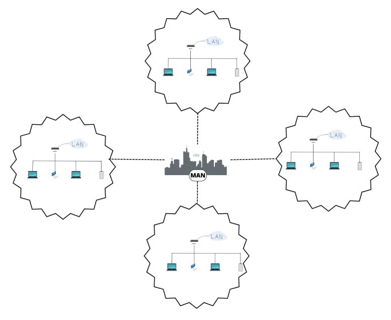
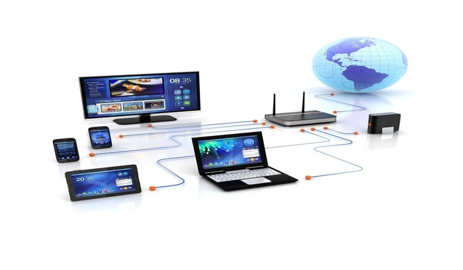
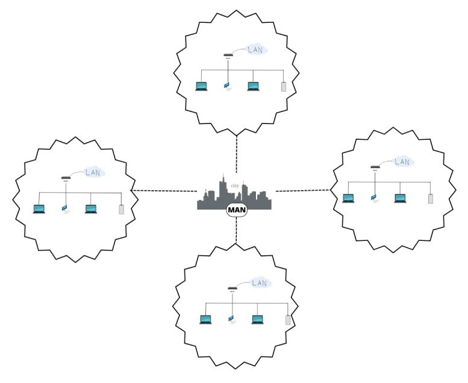
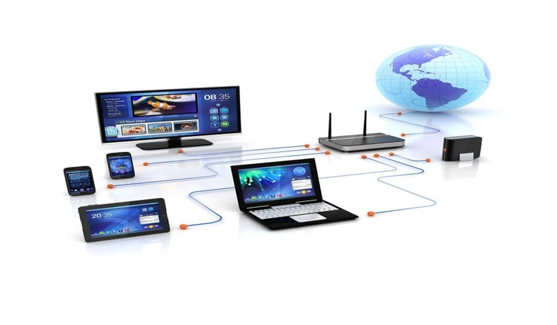

Classification des réseaux
Les réseaux peuvent être classés selon différents critères :
-
En terme de portée
- LAN : (réseaux locaux d'entreprise) qui couvrent quelques centaines de mètres, avec une capacité de transmission varie entre 10 et 100 mb/s.
- MAN : (réseaux métropolitains) qui peuvent couvrir des distances allant jusqu'à 25 km.
- WAN : (réseaux grande distance) qui couvrent de plus grandes distances à l'échelle d'un pays ou de la planète.
-
En fonction de leurs ouvertures
- Des intranets : (réseaux privés internes)
- Des extranets : (réseaux privés internes et externes)
- D'internet : (réseaux publics interconnectés à l'échelle de la planète)
-
En termes de support de connexion
- Filaires : (utilisant des câbles coaxiaux)
- Des cables en paires torsadées
- Des fibres optiques ou des lignes téléphonique
- Sans fil : (utilisant des ondes radios, des ondes infrarouges, des satellites ou le Bluetooth)
-
En termes de type d'organisation
- Peer to Peer : (un peu serveur et un peu client, installation facile ,une faible sécurité).
- De type Client/Serveur : (la plupart des stations sont des postes clients, tandis que d'autres sont dédiées à des tâches spécialisées, avec une administration réalisée par un administrateur).
 


